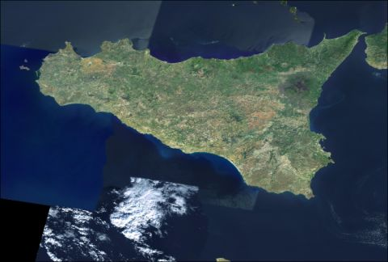

15 febbraio, 2012 | di Pietro Blu Giandonato
Ieri mattina ho avuto modo di partecipare alla conferenza stampa dell’assessore Angela Barbanente, che assieme alla dirigente del Servizio Assetto del Territorio regionale Francesca Pace, alla presidente Sabrina Sansonetti e al direttore Francesco Saponaro di Innovapuglia e alla responsabile del SIT regionale Tina Caroppo, hanno presentato l’ortofoto 2010 che la Regione Puglia ha acquisito in “riuso” dall’Agenzia per le Erogazioni in Agricoltura (AGEA). In effetti la cessione non è avvenuta a titolo gratuito, l’assessore non ha specificato la somma pagata, pur assicurando si tratti di una cifra “simbolica”.
Riguardo il riuso dei dati tra Pubbliche Amministrazioni, purtroppo la normativa europea e nazionale (se parliamo di dati geografici la Direttiva INSPIRE e il suo D.Lgs. di recepimento) dà facoltà al soggetto detentore di cedere i dati dietro pagamento di un corrispettivo, che dovrebbe ricompensare i costi di produzione e aggiornamento del dato (per approfondimenti a riguardo vi rimando a quest’altro mio articolo).
Le caratteristiche dell’ortofoto AGEA 2010
Fino a poco tempo fa i dati di base della Regione Puglia erano costituiti unicamente dalle ortofoto CGR del 2005 e del 2006, da quest’ultima poi sono state derivate la CTR numerica in scala nominale 1:5.000, e la carta di uso del suolo (in realtà un dato di copertura del suolo), oltre a un DSM a 8 metri, tutti dati dei quali avevo parlato sempre su TANTO in questo articolo.
Questa ortofoto AGEA del 2010 costituisce dunque un importante aggiornamento della base imagery, caratterizzata da scala nominale 1:10.000 e risoluzione a 50 cm, con la differenza sostanziale però che mentre per gli enti locali pugliesi i singoli fotogrammi sono disponibili gratuitamente, per cittadini e imprese è fruibile solo ed esclusivamente mediante servizio WMS (i dettagli li trovate qui), e non è scaricabile liberamente come per i dataset che ho citato prima.
Il servizio WMS che eroga dati raster del SIT Puglia, mette a disposizione due strati relativi alla ortofoto AGEA 2010: uno relativo all’intera copertura regionale, l’altro solo per la fascia costiera (circa 1 km di ampiezza). Le differenze tra i due però sembrano sostanziali, pur essendo riferiti entrambi al 2010 le riprese non coincidono temporalmente, e la definizione del dato costiero è nettamente migliore di quello totale, probabilmente a causa del ricampionamento a seguito di compressione e mosaicatura dei fotogrammi originali nel formato ECW. Potete apprezzare il confronto tra le varie ortofoto nella mappa qui sotto.
Clicca qui per ammirare la mappa a pieno schermo realizzata con Leaflet…
Con licenza parlando…
Il problema del riuso dei dati pubblici è come sappiamo tutti uno dei grossi nodi da sciogliere. Logica vorrebbe che un dato pagato con le tasse dei cittadini, ritorni ad essi senza costi ulteriori, e che se ne possano fare anche usi commerciali, il minimo sindacale dunque sarebbe associarvi una licenza CC BY.
I dati geografici scaricabili dal SIT Puglia (ho scritto un articolo che li annovera in un compendio più ampio) sono sottoposti a due differenti disclaimer (primo e secondo) che ne vietano comunque la cessione a terzi e il riuso a fini commerciali. Insomma, un professionista del territorio (ingegnere, architetto, geologo) non potrebbe a questo punto usare i dati del SIT Puglia per il proprio lavoro. Una evidente contraddizione che ha necessità di essere risolta. In passato, le molte email scambiate con il servizio tecnico del SIT Puglia per ottenere chiarimenti sulla licenza d’uso non hanno portato a nulla.
L’occasione della conferenza stampa è stata dunque per me un’occasione imperdibile per capire direttamente, dall’assessore al ramo e dalla responsabile del SIT Puglia, come interpretare la questione.
Ho dapprima contestualizzato il mio intervento, sottolineando innanzitutto come l’hype sugli open data sia ormai altissimo nell’opinione pubblica italiana, e come molte Pubbliche Amministrazioni stiano abbracciandone la causa, aprendo i propri dati, dando vita a portali dai quali poterli fruire – non ultimo il Governo italiano - e concorsi di idee per il loro sfruttamento, come Apps4Italy. E naturalmente ho ricordato l’esistenza della proposta di legge regionale su open software e open data, che si spera verrà presto portata in consiglio. I nostri interlocutori hanno mostrato di essere ben consapevoli di tutto ciò.
Ho poi domandato con chiarezza se i dati presenti sul SIT Puglia siano (ri)utilizzabili anche a scopi commerciali, ad esempio se un professionista del territorio può impiegarli nelle relazioni tecniche che redige abitualmente per il proprio lavoro. E la risposta è stata più che affermativa. Infatti la Regione, ad esempio nelle procedure per la redazione dei PUG comunali, spinge fortemente affinché i tecnici usino proprio i dati del SIT Puglia. Mi sono sentito a quel punto di rilanciare, chiedendo se i dati regionali possano essere utilizzati da soggetti terzi anche a scopi commerciali, ad esempio realizzando servizi e applicativi destinati a cittadini e imprese. Tante volte abbiamo detto che favorire l’apertura dei dati pubblici costituirebbe un formidabile volano per far ripartire l’economia nazionale. Anche qui ho ottenuto una risposta convintamente positiva.
Ricapitolando, la Regione Puglia è assolutamente convinta ad aprire i propri dati a tutti, rendendoli accessibili e riutilizzabili, ma abbiamo i disclaimer per i dati del SIT Puglia che di fatto ne impediscono l’uso a scopi commerciali. A questo punto va fatta chiarezza una volta per tutte, la Regione dovrebbe adottare una licenza che consenta davvero il riuso, ovvero almeno CC BY.
…nell’attesa che presto anche in Puglia nasca il portale dati.puglia.it
Un grazie speciale a Andrea Borruso, che mi ha indotto a sporcarmi le mani con Leaflet, una strepitosa libreria JS – che ho usato per questo articolo – alla portata di (quasi) tutti per realizzare mappe su web esteticamente belle, molto performanti ed estremamente flessibili.
Posted in Dati | 25 Comments »
4 maggio, 2010 | di Andrea Borruso
Questa è una piccola grande notizia che apprendo grazie @lucamenini : il Ministero dell’Ambiente e della Tutela del Territorio e del Mare, ha autorizzato (il 30 Aprile scorso) a “ricalcare le foto aeree tramite l’accesso al WMS del PCN“.
Sarà possibile arricchire la base dati di OpenStreetMap, tracciando punti, linee, e poligoni su delle basi di buona qualità e finalmente omogenee per il territorio nazionale. Molti dei client con i quali è possibile modificare i dati di OSM, consentono infatti di aggiungere layer WMS come base per il ricalco.
Questo il link da usare in JOSM per la sorgente WMS delle ortofoto del 2006:
http://wms.pcn.minambiente.it/cgi-bin/mapserv.exe?map=/ms_ogc/service/ortofoto_colore_06.map&LAYERS=
ortofoto_colore&REQUEST=GetMap&VERSION=1.1.1&FORMAT=image%2Fpng&
Questo per quella del 2008 (soltanto Umbria e Lazio)
http://wms.pcn.minambiente.it/cgi-bin/mapserv.exe?map=/ms_ogc/service/ortofoto_colore_08.map&LAYERS=
ortofoto_colore&REQUEST=GetMap&VERSION=1.1.1&FORMAT=image%2Fpng&
Ringrazio coloro i quali si sono battuti per questo risultato, ed in particolare Simone Cortesi di OpenStreetMap Foundation, e ovviamente anche il PCN.
Simone ha inoltre lanciato una proposta di virtual mapping party di ritracciatura durante la settimana delle libertà digitali: http://www.libertadigitali.org/
Sono molto contento di questa notizia e chiedo a tutti i lettori interessati di darne ampia eco. Grazie in anticipo!!
Posted in News | 6 Comments »
23 aprile, 2009 | di Alessio Di Lorenzo
Come prima cosa vorrei ringraziare Andrea per avermi dato la possibilità di contribuire, nel mio piccolo, a TANTO, scusandomi con lui per tutto il tempo (davvero troppo) passato da quando gli ho promesso questo tutorial ad oggi!
In questo breve articolo-tutorial cercherò di fare una panoramica sulla componente client di MapFish, un framework open source basato su ExtJs e OpenLayers, grazie al quale è possibile realizzare delle applicazioni webgis in pieno stile web 2.0 con poco sforzo una volta compreso il funzionamento degli “ingranaggi”.
Innanzitutto va detto che la parte relativa al mapping vero e proprio può essere gestita esattamente come in OpenLayers che, come già ricordato, è compreso all’interno di MapFish.
Si ha quindi a disposizione tutta la flessibilità di OpenLayers (layer WMS, WFS, Google, Yahoo, ecc.) e se si sanno già realizzare mappe online con questa ottima libreria, il passaggio a MapFish consiste semplicemente nel comprendere come gestire layout ed eventi alla maniera di ExtJs (l’altra componente del framework) e nello scoprire gli utili widget che MapFish mette a disposizione dello sviluppatore.
L’utilizzo di questi widget è simile a quello dei controlli di OpenLayers, con la differenza che in questo caso viene sfruttata la potenza di ExtJs per aggiungere un’interfaccia utente avanzata al controllo. I widget che necessitano del solo codice lato client sono:
- Toolbar – una barra degli strumenti con dei tasti preimpostati (full-extent, pan, zoombox, zoom out) che è possibile espandere con nuovi bottoni sapendosi muovere un minimo con OL;
- Layer Tree – si tratta di una “toc”, simile al layer switcher di OL, ma molto più configurabile, con la possibilità di includere facilmente icone e di annidare e raggruppare i layer a proprio piacimento;
- Scorciatoie – liste a discesa con possibilità di autocompletamento del testo inserito (come avviene in Google suggest, per capirci) che centrano la mappa sulle coordinate corrispondenti al luogo/elemento scelto;
- Stampa – un semplice controllo da includere per stampare la porzione di mappa visualizzata.
Affinché gli altri widget di MapFish (stampa complessa, ricerca nel db, ecc.) funzionino, è necessario che sia installata la componente server del framework che, però, non tratteremo in questo articolo (anche perché, non avendoci mai lavorato, rischierei di scrivere una montagna di cavolate!).
ExtJs semplifica la creazione di layout, anche molto complessi, che risultano accattivanti per l’utente e cross-browser. Con poche righe di codice è possibile creare interfacce a schede (tab), menu accordion, form avanzati, ecc… avendo la sicurezza che l’applicazione verrà correttamente visualizzata su tutti i browser più diffusi in circolazione. Con ExtJs possiamo ottenere rapidamente delle belle GUI in cui “infilare” le nostre applicazioni webgis. Insomma, sono assicurati un risultato di tutto rispetto e un bel risparmio di diottrie e bile (è risaputo che quella di rendere cross-browser delle appicazioni web “complesse” sia una delle attività che più contribuiscono alla creazione di nuovi tipi di imprecazioni…  ).
).
Fatta questa introduzione, passiamo al tutorial vero e proprio!
Tutorial MapFish
Creeremo una semplice applicazione webgis, munita di una toolbar e di un layer tree, con cui sarà possibile visualizzare la localizzazione degli utenti GRASS su due mappe di base alternative.
Le informazioni che mostreremo provengono da diversi server WMS (Nasa, Metacarta, Grass).
Utilizzeremo la versione 1.1 del framework MapFish, scaricabile da qui come archivio compresso in formato tar.gz (se state lavorando in ambiente Windows, vi consiglio di procurarvi l’ottimo 7zip per estrarne il contenuto).
Il primo passaggio consiste ovviamente nello scompattare quanto abbiamo scaricato in modo da ottenere una cartella (MapFish-1.1) che contiene tutto il necessario per creare la nostra applicazione d’esempio.
Utilizzando la sola parte client non abbiamo bisogno di rendere visibile il tutto ad un eventuale webserver e possiamo posizionare la directory di cui sopra dove più ci aggrada nel filesystem…
Tuttavia, per mantenere un certo ordine, consiglio di creare una ulteriore cartella, che chiameremo “EsempioMF”, e di lavorare al suo interno.
Creiamo anche un file index.html, un file myMapFish.js e spostiamo anche loro nella cartella di lavoro “EsempioMF”.
A questo punto, quindi, la situazione dovrebbe essere la seguente:
EsempioMF
|
– MapFish-1.1
|
– index.html
|
– myMapfish.js
Ora che siamo organizzati in modo più o meno ordinato, è il momento di riempire il file index.html.
Ecco come:
<html>
<head>
<title>Esempio MapFish by TANTO</title>
<!-- link ai CSS della componente ExtJS
(è possibile scaricare temi dal sito di extjs e sostituire default.css con il foglio di stile del tema scaricato... ce ne sono un paio che meritano) -->
<link rel="stylesheet" type="text/css" href="MapFish-1.1/client/mfbase/ext/resources/css/ext-all.css" />
<link rel="stylesheet" type="text/css" href="MapFish-1.1/client/mfbase/ext/resources/css/default.css" />
<!-- Inserisco i riferimenti agli script Javascript necessari al funzionamento del framework MapFish -->
<script type="text/javascript" src="MapFish-1.1/client/mfbase/openlayers/lib/OpenLayers.js"></script>
<script type="text/javascript" src="MapFish-1.1/client/mfbase/ext/adapter/ext/ext-base.js"></script>
<script type="text/javascript" src="MapFish-1.1/client/mfbase/ext/ext-all.js"></script>
<script type="text/javascript" src="MapFish-1.1/client/mfbase/mapfish/MapFish.js"></script>
<!-- Inserisco il riferimento allo script Javascript myMapFish.js -->
<script type="text/javascript" src="myMapFish.js"></script>
</head>
<body>
<!-- Nel body creo i div che faranno da contenitori per la mappa vera e propria, per la toolbar e per il layer tree -->
<div id="map"></div>
<div id="buttonbar"></div>
<div id="tree"></div>
</body>
</html>
I commenti indicano cosa è stato inserito nell’header.Quindi possiamo chiudere index.html e iniziare a lavorare sullo script myMapFish.js.
Questo script conterrà due porzioni ben distinte:
- la prima servirà a definire il layout dell’applicazione (codice ExtJs);
- la seconda definirà la mappa vera e propria (codice OpenLayers) ed i widget MapFish che utilizzeremo.
Cominciamo, quindi, dalla prima parte dello script ed inseriamo quanto segue:
//Layout dell'applicazione
//************************
Ext.onReady(function() {
new Ext.Viewport({
layout:'border',
items:[{
region:'north',
margins:'4 4 4 4',
height: 63,
html: '<img src="http://blog.spaziogis.it/wp-content/themes/blacknwhite/blacknwhite/images/TANTO_logo.png"/>',
bodyStyle:'padding:2px;'
},{
region:'center',
layout:'border',
margins:'0 4 4 4',
items:[{
region:'north',
border:false,
contentEl:'buttonbar',
height:26
},{
region:'center',
contentEl:'map',
border:false
}]
},{
title:'Layer tree',
region:'east',
margins:'0 4 4 0',
width:350,
contentEl:'tree',
collapsible:true
},{
region:'south',
margins:'0 4 4 4',
height:20,
html:'Esempio realizzato per TANTO',
bodyStyle:'padding:2px;font-size:12px;font-family:tahoma,arial,helvetica'
}]
});
});
questa porzione di codice definisce completamente la webgui, non c’è bisogno di altro.
In sintesi, dopo aver inizializzato ExtJs con il metodo Ext.onReady, abbiamo creato un oggetto Viewport per dire ad ExtJs di utilizzare tutta la finestra del browser (dimenticavo… vogliamo che la nostra applicazione sia a tutto schermo ) e poi abbiamo inserito un layout di tipo ‘border’ all’interndo del quale (nel pannello ‘center’) abbiamo annidato un secondo layout dello stesso tipo.
Ogni layout di tipo border può contenere 5 panneli (‘region’), detti north, center, east, west, south. Di questi solo ‘center’ è obbligatorio.
Ad ogni modo vi rimando all’esplorazione del sito di ExtJs per scoprire come complicare a piacimento i vostri layout. Il sito è molto ben fatto, pieno di tutorial ed esempi.
Passiamo ora alla mappa e ai mapfish widget.
Sempre all’interno del file myMapFish.js inseriamo questo pezzo di codice sotto al precedente:
//Mappa e Widget
//************************
function initMap(){
//Creo la mappa e definisco alcuni controlli di base
var map = new OpenLayers.Map('map',{controls:[
new OpenLayers.Control.Navigation(),
new OpenLayers.Control.PanZoomBar()
]});
//Definisco l'extent che utilizzerò come vista iniziale
var bounds = new OpenLayers.Bounds(5,36,21,50);
//Definisco i layer WMS, due di base (alternativi) e uno di overlay
var jpl_wms = new OpenLayers.Layer.WMS("NASA_Global_Mosaic",
"http://t1.hypercube.telascience.org/cgi-bin/landsat7",{layers: "landsat7"});
var ol_wms = new OpenLayers.Layer.WMS("OpenLayers_WMS",
"http://labs.metacarta.com/wms/vmap0",{layers: 'basic'});
var grass_users = new OpenLayers.Layer.WMS.Untiled("Utenti_grass",
"http://mapserver.gdf-hannover.de/cgi-bin/grassuserwms?",
{layers: 'GRASS-Users',transparent:true, format:'image/png'},
{isBaseLayer:false});
//Aggiungo i layer alla mappa
map.addLayers([jpl_wms,ol_wms,grass_users]);
//Aggiungo il toolbar widget di MapFish:
//**************************************
//Creo la toolbar
var toolbar = new mapfish.widgets.toolbar.Toolbar({map: map, configurable:true});
//Scelgo di renderizzare la toolbar in un div con id = buttonbar
toolbar.render('buttonbar');
//Aggiungo i bottoni/controlli
toolbar.addControl(new OpenLayers.Control.ZoomBox(), {iconCls: 'zoomin',toggleGroup: 'map'});
toolbar.addControl(new OpenLayers.Control.ZoomOut(), {iconCls: 'zoomout',toggleGroup: 'map'});
toolbar.addControl(new OpenLayers.Control.DragPan({isDefault: true}),{iconCls: 'pan', toggleGroup: 'map'});
//Attivo la toolbar
toolbar.activate();
//Layer tree
//***************************************
//Creo un modello per il layer tree, distribuendo i layer in due nodi espandibili distinti (Mappe di base e Overlay)
var model = [{
text: "Mappe di base",
expanded: true,
children: [{
checked:true,
text:"Nasa Global Mosaic",
layerName:"NASA_Global_Mosaic"
},{
checked:false,
text:"OpenLayers WMS",
layerName:"OpenLayers_WMS"
}]},{
text: "Overlay",
expanded: true,
children: [{
checked:false,
text:"Utenti GRASS",
layerName:"Utenti_grass"
}]
}];
//Inserisco il widget vero e proprio indicando
var tree = new mapfish.widgets.LayerTree({
map: map, el: 'tree',
model: model,
border:false, autoHeight:true
});
tree.render();
//Centro la mappa sull'extent definito in precedenza
map.zoomToExtent(bounds);
} //fine della funzione init()
Anche qui i commenti dovrebbero essere abbastanza chiari.
Abbiamo creato una mappa esattamente come se stessimo lavorando con buon vecchio OpenLayers e, in più, abbiamo inserito nel codice due MapFish widget.
Prima di vedere il risultato del nostro lavoro dobbiamo fare due piccole modifica al file index.html:
- inserire un evento onload a livello del tag per fare in modo che la mappa venga caricata all’apertura della pagina (esattamente come in OL);
- inseire alcune regole CSS necessarie per la corretta visualizzazione dei MapFish widget
Ecco come deve apparire index.html modificato a dovere:
<html>
<head>
<title>Esempio MapFish by TANTO</title>
<!-- link ai CSS della componente ExtJS
(è possibile scaricare temi dal sito di extjs e sostituire default.css con il foglio di stile del tema scaricato... ce ne sono un paio che meritano) -->
<link rel="stylesheet" type="text/css" href="MapFish-1.1/client/mfbase/ext/resources/css/ext-all.css" />
<link rel="stylesheet" type="text/css" href="MapFish-1.1/client/mfbase/ext/resources/css/default.css" />
<!-- Inserisco i riferimenti agli script Javascript necessari al funzionamento del framework MapFish -->
<script type="text/javascript" src="MapFish-1.1/client/mfbase/openlayers/lib/OpenLayers.js"></script>
<script type="text/javascript" src="MapFish-1.1/client/mfbase/ext/adapter/ext/ext-base.js"></script>
<script type="text/javascript" src="MapFish-1.1/client/mfbase/ext/ext-all.js"></script>
<script type="text/javascript" src="MapFish-1.1/client/mfbase/mapfish/MapFish.js"></script>
<!-- Inserisco il riferimento allo script Javascript myMapFish.js -->
<script type="text/javascript" src="myMapFish.js"></script>
</head>
<body onload="initMap()">
<!-- Nel body creo i div che faranno da contenitori per la mappa vera e propria, per la toolbar e per il layer tree -->
<div id="map"></div>
<div id="buttonbar"></div>
<div id="tree"></div>
</body>
</html>
<style type="text/css">
/* Icone dei bottoni della toolbar */
.zoomin {
background-image:url(MapFish-1.1/client/mfbase/mapfish/img/icon_zoomin.png) !important;
height:20px !important;
width:20px !important;
}
.zoomout {
background-image:url(MapFish-1.1/client/mfbase/mapfish/img/icon_zoomout.png) !important;
height:20px !important;
width:20px !important;
}
.pan {
background-image:url(MapFish-1.1/client/mfbase/mapfish/img/icon_pan.png) !important;
height:20px !important;
width:20px !important;
}
/* Dimensioni del Layer tree */
#tree {
height: 100%;
width: 100%;
}
</style>
Adesso apriamo index.html col borwser e il risultato dovrebbe essere questo.

Posted in Didattica | 19 Comments »
10 dicembre, 2007 | di Andrea Borruso
OpenAerialMap è un bel progetto con un obiettivo interessante: raccogliere foto aeree di dominio pubblico fatte in tutto il mondo, e renderle consultabili tramite un’unica interfaccia coerente. Chiunque abbia a disposizione dati di questo tipo, li potrà caricare sul sito e rendere disponibili al mondo.
Il catalogo è ancora limitato, ma negli stati uniti la copertura è buona anche ad una certa risoluzione. Per l’Italia ancora nulla ad alta risoluzione, ma c’è del materiale utile per carte regionali. Si tratta di immagini i-Cubed Landsat, sulle quali purtroppo cade (al momento) quanto detto in premessa, in quanto non è chiaro con che tipo di licenza vengano rilasciate. Si legge infatti:
[...]
it is best to assume that this imagery can not be used outside of OpenAerialMap
[...]
Tutto il catalogo è accessibile tramite WMS, e quindi potrete anche scaricare le immagini sul vostro PC e farne l’uso che la licenza vi consente. Per fare il download dell’immagini potrete ancora una volta usare FWTools:
- scaricate FWTools: Linux, Windows
- installatelo
- scaricate il file xml che descrive il servizio WMS di OpenAerialMap (http://openaerialmap.org/static/gdal_wms.xml) e salvatelo nella cartella in cui avete installato FWTools
- aprite la shell di FWTools
- scrivete un comando con questa sintassi: gdal_translate -projwin 12.06979 38.59784 15.86623 36.0124 -outsize 5000 5000 -of JP2KAK gdal_wms.xml palermo.jp2
FWTools è onnivoro in questo contesto e può quindi gestire come source fonti WMS. Con questa sintassi scaricherò una foto che copre la Sicilia in formato JPEG2000, che potrei usare per una carta al 250.000 (qui sotto uno screenshot dell’area). Le coordinate che leggete nel comando sono quelle del vertice in alto a sinistra e di quello in basso a destra.

Il post è (quasi) una traduzione molto veloce di un post del bravissimo Christopher Schmidt.
Posted in Dati | 2 Comments »